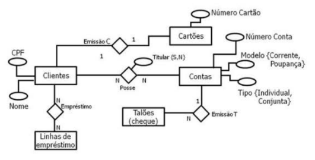
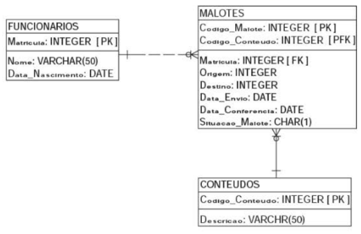

1. Identifique as entidades no modelo entidade-relacionamento abaixo:
2. Pedro foi contratado como desenvolvedor de software de uma empresa. Em seu primeiro dia de trabalho ele se deparou com o MER (Modelo Entidade-Relacionamento), que representa os dados de um sistema de controle de malotes. Foi solicitado a Pedro relatório para o sistema contendo APENAS os seguintes dados: a matrícula de todos os funcionários que enviaram os malotes, o código dos malotes enviados, a data de envio do malote e a situação dos malotes. Para a geração do relatório, Pedro tem que fazer uma consulta utilizando o comando SELECT da linguagem SQL.
3. Sobre os passos do processo de desenvolvimento de um banco de dados, assinale a alternativa correta
4. Você começou um novo desafio em uma equipe de projetos em
banco de dados e nesse desafio você se deu conta que a principal base de dados
da empresa está passando por problemas.
Nesse momento você entende que a normalização seja uma boa solução para muitos
dos problemas, todavia você precisa justificar essa abordagem para a gerência
da sua área.
Com relação a normalização, qual é o argumento mais correto?
5. Pedro foi contratado como desenvolvedor de software de uma
empresa. Em seu primeiro dia de trabalho ele se deparou com o MER (Modelo
Entidade-Relacionamento), que representa os dados de um sistema de controle de
malotes.
Foi solicitado a Pedro relatório para o sistema contendo os seguintes dados:
matrícula do funcionário, nome do funcionário, data de envio e de conferencia
do malote e descrição do conteúdo do malote, ordenada alfabeticamente pela
descrição do conteúdo malote. Para a geração do relatório, Pedro tem que fazer
uma consulta utilizando o comando SELECT da linguagem SQL
6. Você necessita contratar um profissional para
administração de Banco de Dados.
Você precisa fazer algumas perguntas técnicas e medir as respostas dos
candidatos.
Um dos candidatos colocou as seguintes afirmações:
I. Controle de concorrência é quando, em um banco de dados, usuários distintos
tentam acessar a mesma informação e então é feito um controle entre essas
transações
II. Atomicidade, Consistência, Isolamento e Durabilidade são conceitos
fundamentais quando falamos em controle de concorrência.
III. Bloqueio exclusivo é o único tipo de bloqueio possível quando falamos
sobre controle transacional.
Fazendo uma análise, na resposta do candidato:
7. Você foi contratado para projetar um banco de dados de
administração de um campeonato de futebol.
Um jogador de futebol possui número e nome e pode jogar em apenas um time, ou,
em caso de desemprego, não jogar em nenhum time. Um jogador é identificado
unicamente pelo seu CPF e pela sua data de nascimento.
Um time é composto de vários jogadores e possui nome, ano de fundação e
mascote e endereço da sede do clube. O clube é identificado unicamente pelo
número de registro na confederação
Sabemos que um endereço é composto por logradouro, número, complemento, CEP,
cidade e estado.
Pede-se
1. Identifique as entidades, seus atributos e seus atributos chave;
2. Descreva os relacionamentos entre as entidades (de forma literal, exemplo,
um cliente possui no mínimo um e no máximo N carros)
Resposta Correta (Sugestão):
Jogador (CPF, Data_Nascimento)
Time (Registro, Nome, Ano_Fundacao, Endereco, Jogadores)
Endereco (logradouro, numero, complemento, CEP, cidade, estado)
Emprego (Time_Jogador)
Entidades:
* Jogador. Atributos: CPF (chave), Data de nascimento (chave) Nome e numero
* Clube: Numero de registro na confederação (chave) , Complemento (chave), CPF (chave), Cidade e Estado
Relacionamentos:
* Um jogador JOGA no mínimo zero e no máximo e no máximo um clube
* Um clube POSSUI no mínimo zero e no máximo N jogadores
* Um clube POSSUI no mínimo um e no máximo um endereço
Abaixo encontra-se as respostas das questões de múltipla escolha: